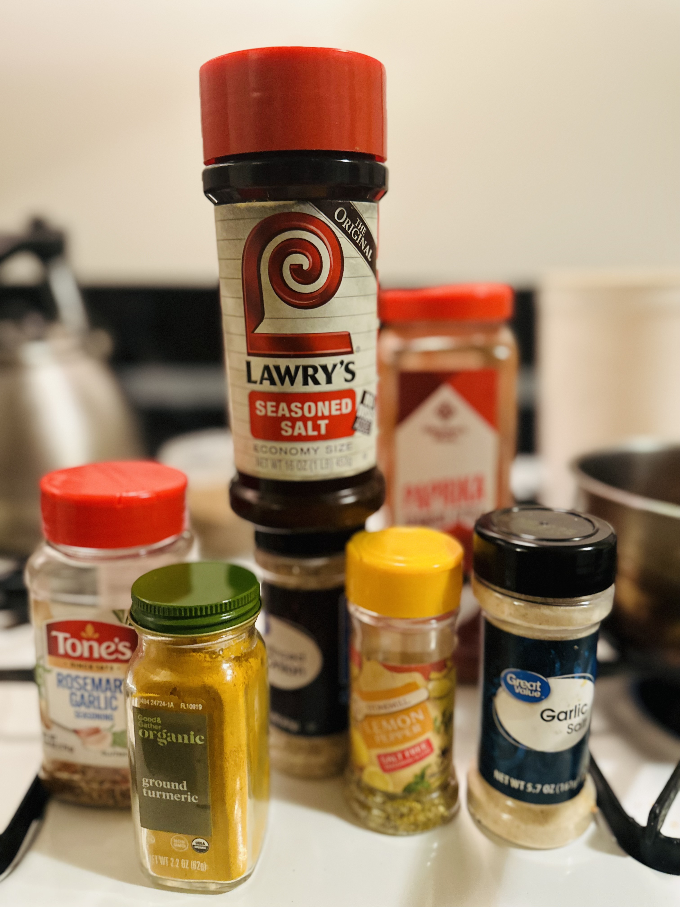
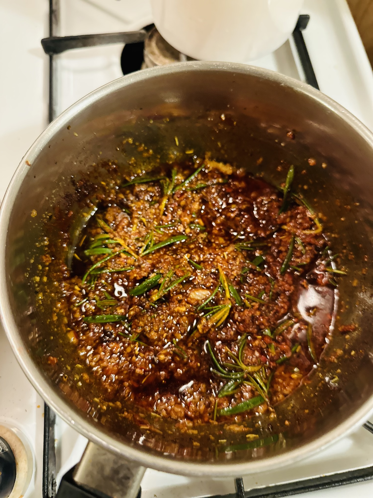

here is how it starts
Chop a small onion and tomato and put it on low heat and mix the above ingridents (shown in picture)
Heat it on very low heat


it might sound strange but put in a new garbage bag and put in the fridge for three days
pro tip is you want to add the stuffing inside the skin- so a day before thanksgiving take the turkey out and add the sauce inside the skin, so that the flavor is all over the turkey

the day of, add a few potatoes and omions chopped in big pieces

add a little bit of wine (about 1/5) all over the turkey- this is optional